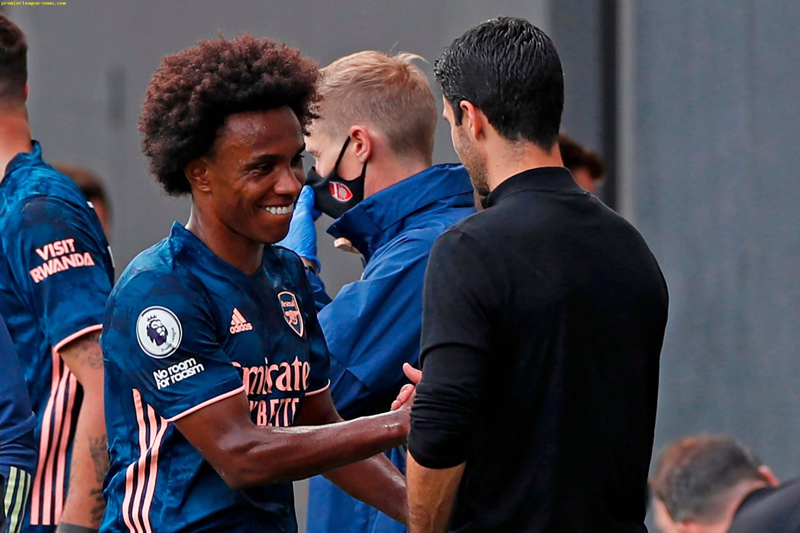

Final Score: Fulham 0 - 3 Arsenal
This season’s Premier League opener featured Fulham, favored to face relegation, and Arsenal, who have their sights on the top four. The skill set and experience gap between the two sides was quite visible as Arsenal cruised to a three-nil victory with goals by Lacazette, Gabriel, and Aubameyang.
1. Arsenal’s New Signings Make a Splash
Arsenal new boys made a promising debut. After what seemed to be a highly criticized acquisition on Arsenal’s side, Willian Borges da Silva made a great first impression in the squad. Willian served up two official assists, one coming from a corner and the other coming from a beautiful switch of play to set up Aubameyang’s gorgeous finish. Not only did he get his name on the stat sheet, but he promises to fill a crucial responsibility in the Arsenal squad that has been lacking in the previous seasons: a deadly free-kick taker. Willian’s early free-kick that hit the post and his impressive set piece history provide hope that Arsenal will score more free-kicks than last year’s single one. If Willian manages to keep this form and impress the fans, he will surely be welcomed for his next three seasons at Arsenal. Another new Arsenal signing that made his Premier League debut is Gabriel Magalhães. Although a lack of communication between him and Bernd Leno almost cost Arsenal the clean sheet early on, he quickly made up for it as the game progressed. He looked solid at the back and even got his name on the scoreboard from a corner early in the second half.

2. Fulham Must Strengthen to Stay Up
Arsenal looked a strong side in this match but it must be said that much of their performance was down to the lack of quality in Fulham’s team. Fulham really did look a Championship side in this match, with a lack of quality specifically in the midfield and out on the wings. It is clear that they must bring in some more talent if they want any chance of surviving in the Premier League. Last time Fulham were in the top flight they went out and made some big-name signings with the likes of Jean Michael-Seri and Andre Schurrle among those brought in. This still did not stop them from being bottom of the table and returning to the Championship. At the moment the only big-name signings they have are Alphonse Areola and Kenny Tete. This is a definite improvement in quality for Fulham, but there is only so much a goalie and right back can do to affect a game in a relegation scrap. One definite positive is the return of certain players that were both on loan from other teams, or they sent on loan to other teams. It was a tough opponent for Fulham in their first match of the season, but there are definite improvements that need to be made within the team if they want to compete to stay in the league.
4. Fulham Missing Fan Energy
Soccer has always been a sport where spectators play a crucial role, and the incentive for a team to succeed is primarily driven by the energy and passion of the fans. Home field advantage is now nearly nonexistent, especially to the sides in the bottom half of the table. The lack of fans representing Fulham today highlighted their missing aggression and confidence. If the past serves as precedent, any side newly promoted to the top flight can only make their impact on the league by intimidating bigger teams with the roar of their home spectators.
5. Creativity Problem at Arsenal Possibly Solved
If you asked Arsenal fans what they need in their team, most would say midfield reinforcements. This includes a box-to-box midfielder and a creative midfielder. They have been linked with plenty of players fitting the creative build in the likes of Aouar and Coutinho. Following this first match of the season, Willian is proving these players may not be necessary. As a player that can play out right, out left, and in the 10 position, if Arsenal ever switch to a 4-2-3-1, he is versatile enough to make an impact at any of these positions. Let's take a deeper look into the statistics of chance creation. Last year Arsenal struggled greatly with creation throughout their team finishing with an xA (expected assists) of 35.41. That was only the 12th most in the Premier League last season with Arsenal falling behind the likes of Southampton and even West Ham. Arsenal’s leading player in terms of xA was Nicolas Pepe who had an xA of 4.90 placing him outside the top 30 in the Premier League. With the addition of Willian, Arsenal’s xA is immediately rocketed higher. Last year Willian ranked fifth in the entire league with an xA of 8.68. With two official assists in this match, Willian proved that this xA is not an anomaly and that he may be the simple solution to one of Arsenal’s biggest problems. If Arteta sees enough out of him, it will help him focus his attention on the box-to-box midfielder in Thomas Partey instead of spending big in a different part of the team.